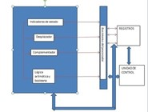
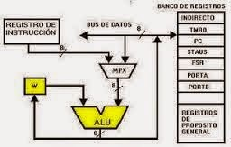

2.1 Organización del procesador.
2.2 Estructura de registros.
2.2.1 Registros visibles para el usuario.
2.2.2 Registros de control y de estados.
2.2.3 Ejemplos de registros de CPU reales.
2.3 El ciclo de instrucción.
2.3.1 Ciclo Fetch-Decode-Execute.
2.3.2 Segmentación de instrucciones.
2.3.3 Conjunto de instrucciones. Características y funciones.
2.3.4 Modos de direccionamiento.
2.4 Casos de estudio de CPU reales.
La Unidad de Procesamiento (CPU) controla el funcionamiento del computador y lleva a cabo sus funciones de procesamiento de datos. Frecuentemente se le llama procesador.br
Un procesador, incluye tanto registros visibles por el usuario como registros de control/estado. Los registros visibles por el usuario pueden ser de uso general o tener una utilidad especial, mientras que los registros de control
y estado se usan para controlar el funcionamiento del procesador, un claro ejemplo es el contador de programa.
Lleva a cabo una gran variedad de:
La CPU controla las operaciones básicas del ordenador enviando y recibiendo señales de control, direcciones de memoria y datos de un lugar a otro de la computadora a través de un grupo de canales llamados BUS.
Son aquellos que pueden ser referenciado por medio del lenguaje maquina que ejecuta la CPU, los registro que normalmente disponibles son:
Registros de propósito general:
son aquellos que pueden guardar tanto datos como direcciones
Registro de datos:
que pueden ser asignados por el programador a diversas funciones. En algunos casos son de propósito general y pueden ser empleados por cualquier instrucción de máquina que lleve a cabo operaciones sobre los datos.
Registros de direcciones:
contienen direcciones en la memoria principal de datos y este tipo de registro puede ser de propósito general o estar a un modo específico de direccionamiento.
Códigos de condición:
también conocidos como indicadores o flags. Los códigos de condición, son bits activados por el procesador como resultado de determinadas operaciones.

Se utilizan para controlar las operaciones del procesador, la mayor parte de estos registros no son visibles al usuario y algunos pueden ser accesibles a las instrucciones de maquina ejecutadas en un modo de control. Los registros utilizados son los siguientes:
Registro de direcciones de memoria (MAR):
el cual contiene la dirección en donde se efectuará la próxima lectura o escritura de datos. El numero de direcciones depende del tamaño de la MAR.
Registro de datos de memoria (MBR):
contiene los datos que van a ser escritos en la memoria o los que fueron leídos en ella.
Registro de direcciones de entrada y salida (I/O AR):
especifica al dispositivo ya sea de entrada o salida
Registro de datos de entrada y salida (I/O BR):
es una área temporal en donde se lleva a cabo el intercambio de datos entre el procesador y el dispositivo de entrada y salida que esta especificado en IOAR.
Registro de instrucciones (IR):
contiene la dirección de la siguiente instrucción que se va a ejecutar
Palabras de estado del programa (PSW):
contiene códigos de condición junto con otras informaciones de estado como el signo, acarro, desbordamiento, entre otras.

En algún diseño concreto de procesador es posible encontrar otros registros relativos a estado y control. Puede existir un puntero a un bloque de memoria que contenga información de estado adicional (por ejemplo, bloques de control de procesos).
En las máquinas que usan interrupciones vectorizadas puede existir un registro de vector de interrupción. Si se utiliza una pila para llevar a cabo ciertas funciones (por ejemplo, llamada a subrutina), se necesita un puntero de pila
del sistema.
En un sistema de memoria virtual se usa un puntero a la tabla de páginas. Por último, pueden emplearse registros para el control de operaciones de E/S. En el diseño de la organización de los registros de control y estado entran en
juego varios factores. Una cuestión primordial es el soporte del sistema operativo. Algunos tipos de información de control son de utilidad específica para el sistema operativo.
Si el diseñador del procesador posee una comprensión funcional del sistema operativo que se va a utilizar, la organización de los registros puede adaptarse hasta cierto punto a ese sistema operativo.
Otra decisión importante en el diseño es la distribución de información de control entre registros y memoria. Es frecuente dedicar los primeros (más bajos) pocos cientos o miles de palabras de memoria para fines de control. El diseñador
debe decidir cuánta información de control debiera estar en registros y cuánta en memoria. Se presenta el compromiso habitual entre coste y velocidad.
Un ciclo de instrucción (también llamado ciclo de fetch-and-execute o ciclo de fetch-decode-execute en inglés) es el período que tarda la unidad central de proceso (CPU) en ejecutar una instrucción delenguaje máquina. Comprende una secuencia de acciones
determinada que debe llevar a cabo la CPU para ejecutar cada instrucción en un programa.
Cada instrucción del juego de instrucciones de una CPU puede requerir diferente número de ciclos de instrucción para su ejecución. Un ciclo de instrucción está formado por uno o más ciclos máquina.
Para que cualquier sistema de proceso de datos basado en microprocesador (por ejemplo un ordenador) o microcontrolador (por ejemplo un reproductor de MP3) realice una tarea (programa) primero debe buscar cada instrucción en la memoria
principal y luego ejecutarla.
La segmentación de instrucciones es similar al uso de una cadena de montaje en una fábrica de manufacturación. En las cadenas de montaje, el producto pasa a través de varias etapas de producción antes de tener el producto terminado. Cada etapa o segmento
de la cadena está especializada en un área específica de la línea de producción y lleva a cabo siempre la misma actividad. Esta tecnología es aplicada en el diseño de procesadores eficientes. A estos procesadores se les conoce como pipeline
processors.
Estos están compuestos por una lista de segmentos lineales y secuenciales en donde cada segmento lleva a cabo una tarea o un grupo de tareas computacionales. Los datos que provienen del exterior se introducen en el sistema para ser
procesados. La computadora realiza operaciones con los datos que tiene almacenados en memoria, produce nuevos datos o información para uso externo. Las arquitecturas y los conjuntos de instrucciones se pueden clasificar considerando los siguientes
aspectos:
Almacenamiento de operandos en la CPU: dónde se ubican los operandos aparte de la memoria. Número de operandos explícitos por instrucción: cuántos operandos se expresan en forma explícita en una instrucción típica.
Normalmente son 0, 1, 2 y 3. Posición del operando: ¿Puede cualquier operando estar en memoria?, o deben estar algunos o todos en los registros internos de la CPU. Cómo se especifica la dirección de memoria (modos de direccionamiento
disponibles). Operaciones: Qué operaciones están disponibles en el conjunto de instrucciones. Tipo y tamaño de operandos y cómo se especifican.
El campo de operación de una instrucción especifica la operación que se debe realizar. Esta debe ser ejecutada sobre algunos datos almacenados en registros del computador o en palabras de memoria, es decir, sobre los operandos. El modo de direccionamiento especifica la forma de interpretar la información contenida en cada campo de operando para localizar, en base a esta información, el operando.
Los modos de direccionamiento del 8086 (Crawford & Gelsinger, 1987) son muy irregulares. Los registros del procesador, se usan para contener los datos con que se está trabajando puesto que el acceso a los registros es mucho más rápido que los accesos a memoria. Se pueden realizar operaciones aritméticas y lógicas, comparaciones, entre otras. Hay un campo para un registro (reg), que especifica uno de los operandos, y otros dos campos (mod y r/m) para el otro.
En el Motorola 68000 el mismo direccionamiento lleva implícito el tipo de registro sobre el que trabaja (direcciones o datos). Está basado en dos bancos de 8 registros de 32 bits. Un banco es de datos (Dn) y el otro de punteros (An). Además contiene un contador de programa de 32 bits y un registro de estado de 16 bits. Los registros de datos (D0 a D7) se pueden usar como registros de 32 bits (.l), 16 bits (.w) y 8 bits (.b). Cualquiera de ellos puede usarse como acumulador, índice o puntero. Acepta los siguientes modos de direccionamiento:
La CPU está compuesta por la unidad de ejecución y la unidad de instrucciones. La unidad de ejecución contiene los ocho registros de 32 bits de propósito general que se utilizan para el cálculo de direcciones y operaciones con datos y un barrel shifter de 64 bits que se utiliza para acelerar las operaciones de desplazamiento, rotación, multiplicación y división. Para este microprocesador existe un modo nuevo que requiere un byte adicional denominado SIB (escala, índice, base) que se añade al byte de operandos y cuyo formato es el siguiente: Ese byte adicional especifica un factor de escala y dos registros (base e índice).